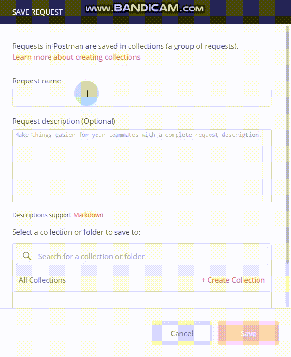
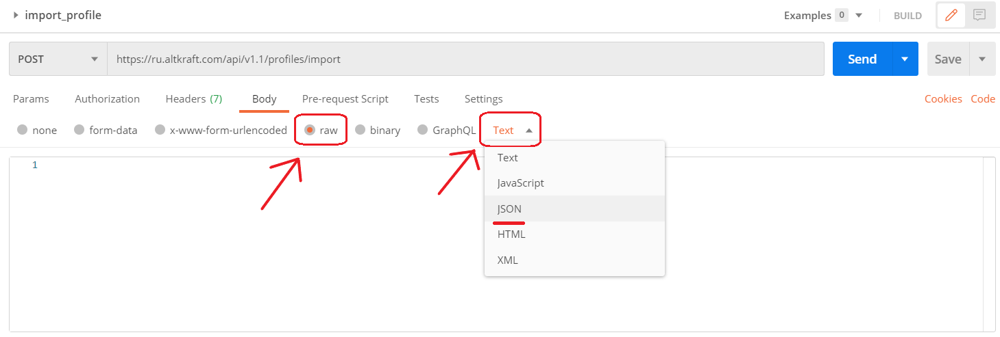
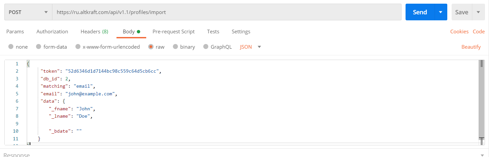
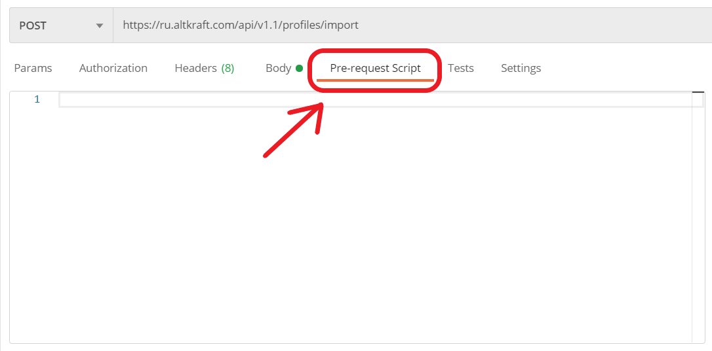
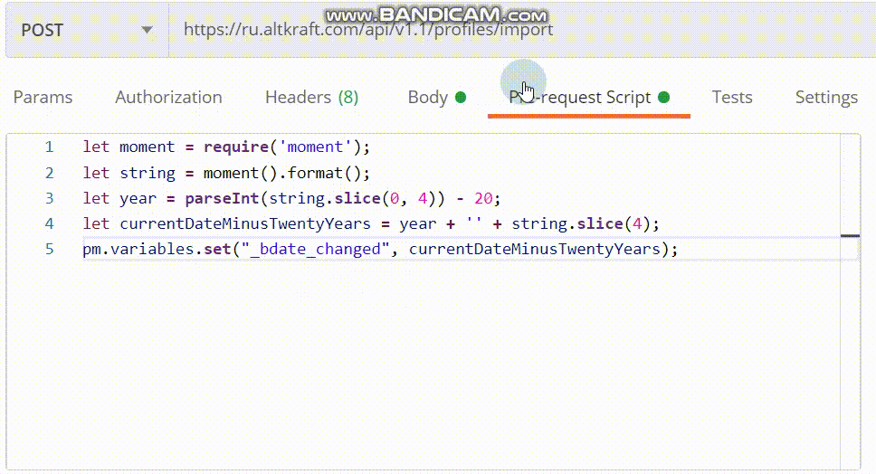

1. Create a new request
After we launch Postman, we click the bottom NEW.

Now you see a new window. Select Request.

Postman asks you give a name to the request. It’s up to you. We just name it “import_profile”.
Let’s slide down. There is a field that says Request Description. Give a short description of the request. It definitely makes your teammates’ life easier. Otherwise, just skip it.
The last field in this window is Choose Collection. Collections are created in Postman in case you want to save all your requests as a group for easier access. If you have not created a suitable collection yet, now is the time to create one.
Click Create Collection, enter the name of the collection, for example “Profiles”. You can also choose a folder where you want to save the request. Then click the checkmark or just press Enter.
Click Save to Profiles to create your request. It will be opened in a new tab.

Well, we have created a request. Now we need to configure it.
2. Select the method and enter URL
Once your new tab is open, you can specify the details you need for your request. By default Postman will select the GET method for new request. Click the method drop-down to select a suitable method. In our case this method is POST.

Slide a little to the right - to the central field that says Enter request URL. Each request you send in Postman requires a URL representing the API endpoint you are working with. Enter API URL here. Our URL is https://ru.altkraft.com/api/v1.1/profiles/import.

Let’s go down to the next panel.
3. Fill in the request body
Click Body tab. You will need to send body data with requests whenever you need to add or update structured data. However, before doing this, you’d better not forget to select the type of data.

The Body tab in Postman allows you to specify the data you need to send with a request. You can send various different types of body data to suit your API. The type we need now is raw.
By the way, you can choose the form of the request here. Use the raw tab, click the drop-down list to indicate all possible formats of data. The default format is Text. We need JSON . Find it and click.

Now let's start filling in the request body.
Our request body will consist of a JSON object. JSON objects are written as “key: value” pairs.
For example, the key "token" and its value "52d6346d1d7144bc98c559c64d5cb6cc" will be written as: "token": "52d6346d1d7144bc98c559c64d5cb6cc".
We need to enter the profile data that we want to import into the database in the same format.
Don’t forget JSON objects are surrounded by curly braces { }. So, the body of our request will look like this:
{
"token": "52d6346d1d7144bc98c559c64d5cb6cc",
"db_id": 2,
"matching": "email",
"email": "john@example.com",
"data": {
"_fname": "John",
"_lname": "Doe",
"_bdate": ""
}
}
Copy this code and paste it into the body.

Now we enter only a small part of the possible profile data. If you wish to know what else you can import into the database, just follow the link: Profile.
If you still have questions, look at the gif below:

4. Use Pre-request Script
You can use pre-request scripts in Postman to execute JavaScript before a request runs. And now we need it because we want to set a variable value and use it in the request body. To include code you want to execute before Postman sends a request, select the Pre-request Script tab. It is next to Body tab.

We have an object “data” in the JSON-object. There are three keys in “data”. We need only one — “_bdate” — because we want to change the value of this key in such a way that it will calculate the current data minus 20 years.
That’s why we need to create an environment variable in Pre-request Script. Copy the following code and paste it into the Pre-request Script tab.
let moment = require('moment');
let string = moment().format();
let year = parseInt(string.slice(0, 4)) - 20;
let currentDateMinusTwentyYears = year + '' + string.slice(4);
pm.variables.set("_bdate_changed", currentDateMinusTwentyYears);

We’ve just created an environment variable “_bdate_changed”. Since that moment every time the request is sent, that variable will calculate the current date, but 20 years earlier.
Let’s add this variable to the request body.
We go back to the Body tab, find the object “data” and its value “_bdate”. Now delete the previous value of this key and insert the variable “_bdate_changed”. In Postman an environment variable is always surrounded by quotes and curly braces. Like this: “{{_bdate_changed}}”.

Now before the request is sent, the value of the “_bdate” will be changed depending on the current date.
5. Send the request and Examine the response
We have our request set up. Now go back to the upper panel and click SEND to send the request.

In the bottom panel you can see the Response received from the API serve. Examine it.
If the field error_text says Successful operation, then the customer profile has been successfully imported into the Altkraft Marketing database. Congratulations!
Otherwise, you have made a mistake somewhere. Please double-check the entered data.